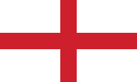
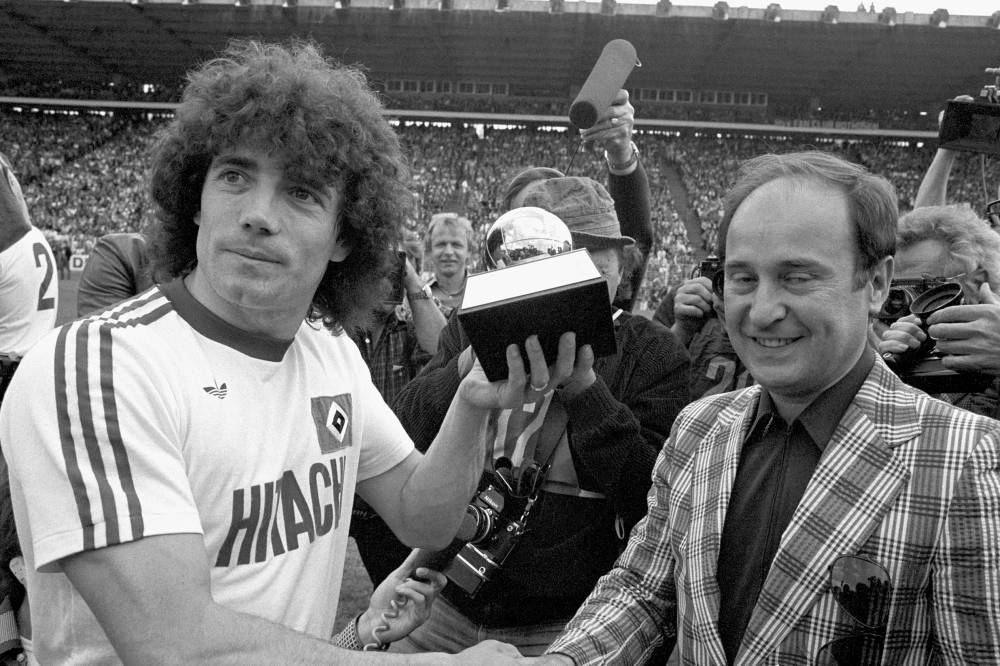
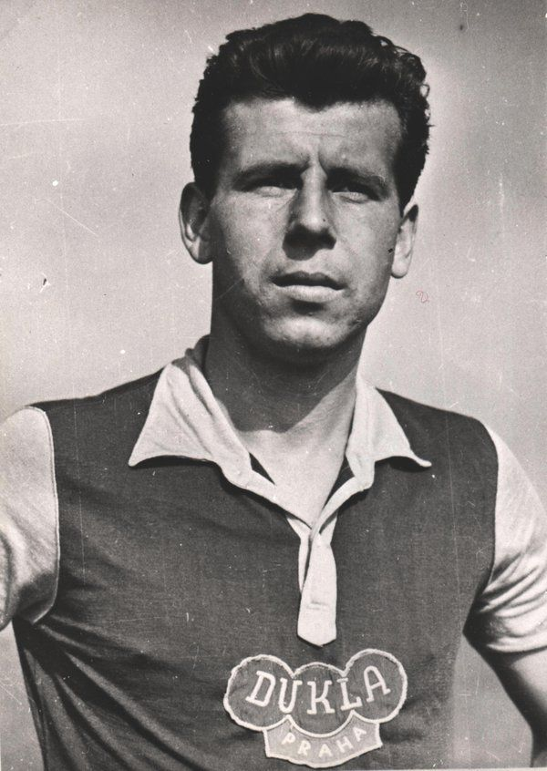
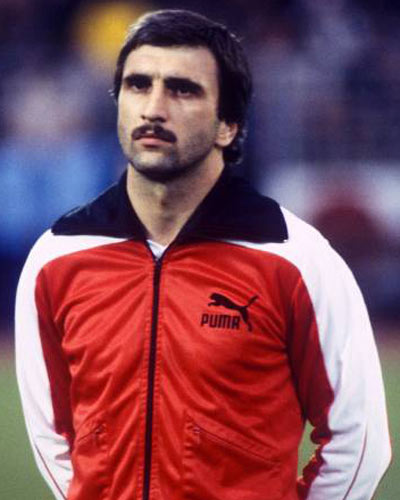
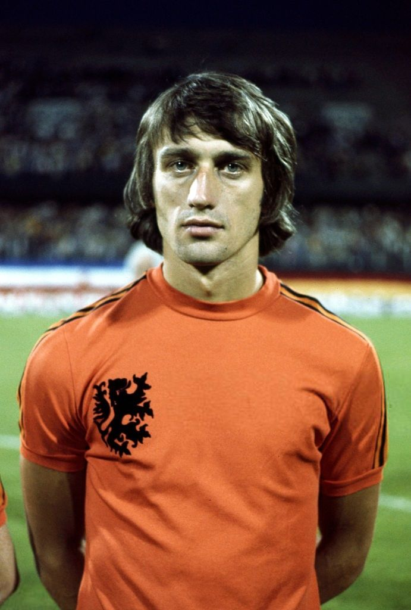

 Kevin KEEGAN - 1978

- Le cinquième joueur britannique honoré
C'est à l'issue d'une compétition acharnée que Keegan termina à la première place du classement 1978, devant Krankl. Seulement 6 points les séparent.
Nationalité : Anglaise
Né le : 14 février 1951, à Armthorpe (ANG)
Taille : 1,70
Poids : 67 kg
Poste : attaquant
Clubs : Scunthorpe (1968-1971), Liverpool FC (1971-1977), Hambourg SV (1977-1980), Southampton (1980-1982), Newcastle United (1982-1984) et Tigers Kuala Lumpur (1984-1985)
Palmarès de joueur : Coupe des champions 1977 ; Coupe de l'UEFA 1973 et 1976 ; Championnat d'Angleterre 1973, 1976 et 1977 ; Championnat de RFA 1979 ; Coupe d'Angleterre 1974 ; Charity Shield 1974 et 1976 ; meilleur buteur de l'Euro 1980 (7 buts) ; meilleur buteur du Championnat d'Angleterre 1982 (26)
Bilan en équipe nationale : 63 sélections A, 21 buts (1972-1982)
Bilan en phase finale de Coupe du monde : 1 participation, 1 match (1982)
Palmarès Ballon d'Or : vainqueur en 1978 et 1978 et (2e en 1977)
Carrière d'entraîneur : Newcastle United (février 1992-janvier 1997), Fulham (1998-1999), Angleterre A (février 1999-octobre 2000) et Manchester City (depuis mai 2001)
Palmarès d'entraîneur : Championnat d'Angleterre de L2 1993
Classement du Ballon d’Or France Football 1978 :

Kevin Keegan (Angleterre / Hambourg SV),
87 pts.

Hans Krankl (Autriche / FC Barcelone),
81 pts.

Robert Rensenbrink (Pays-Bas / Anderlecht),
50 pts.
Retour à l'accueil